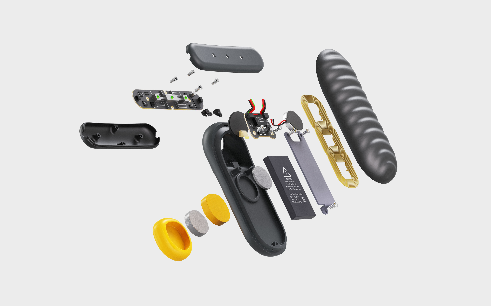

RESET
Wearable Technology
Mental Health
Reset is a Mental Health wearble that enables you to take control of your emotions.
Gain control through subtle CBT techniques that can be done during moments of stress.
Background
While researching why people play games, and exploring the different motivations and preferences around the types of games they play, I discovered the realm of gaming as an escape from anxiety. Using the insights from my research, I set out to design a smart product that would be able to provide some relief from everyday struggles. As designing for the extremes often results in solutions that work for everyone, I set my focus on people who deal with daily anxiety.
Anxiety
Anxiety Disorder is an umbrella term that covers multiple types of disorders (panic, social, phobias, general, etc). The different types of anxiety all have similar symptoms, while the triggers depend on the individual. Currently the most effective anxiety treatments are medicine and regular therapy with a trained professional, however, it takes trial and error to find the correct medication, and therapy is usally a limited schedule time, which does not help you in moments of immediate need.
Users
General Anxiety Disorder has become more common in college aged students and young professionals. Studies have also found that these generations are more stressed than previous ones, so I decided to make this the target user group. With this in mind, I conducted multiple rounds of interviews with people between the ages of 18-32. To maintain privacy, I have built personas to represent the data.

Dominique (25)
Resident Physician
“I usually feel most anxious at home when I’m refelecting on my day. I get heart palpitations and I panic and hyperventilate.”
Jessica (31)
Historian
“I feel most anxious in unfamiliar situations, work, driving, social events, etc. I notice my heart rate increase, shortness of breath, insomnia, and I grind my teeth occasionally.”
Heather (20)
University Student
“I feel most anxious in large crowds and events. I sometimes get a tightness in my chest and I tend to cry like a fountain for any reason.”
Body and Mind
Even though these people all live different lives, one thing that is the same is their body's physical response to stress. A person’s heart rate is always one of the first key signals that a person’s stress levels are rising. This idea aligns with Cognitive Behavioral Therapy, where it is believed that our thoughts influence our emotions, which influence our behaviors, and then loop back into our thoughts. Disrupting this loop is the key to managing stress and emotions, and we disrupt with technology.

+ technology
Technology is 'smart' when it takes useful data, correctly analyzes it, and outputs real solutions. Looking at the mind and body realtionship, where the heart rate is always the key signal to stress, it seemed obvious that a well placed heart monitor would be the key to knowing when help is needed. At moments of rising stress, Cognitive Behavioral Therapy techniques are most effective because they help you recognize when your mind is affecting your body, and give you the tools to process these emotions. Heart rate data acquired while using these technique could provide futher insight into how well you improve overtime.
THE Mission
Using the combination of technology and psychology, a more personal and tailored experience to mental health therapy can be provided. Targeting the physical responses makes this solution applicable to everyone, because no matter the trigger, we all have a heart. A mobile and wearable solution can also be much more accessible than current methods of in person therapy, and could even be used to enhance the care given from a professional. A wearable would obviously catch someone's eye, so rather than seeming like a health device, this solution should be able to hide in plain sight.

Validation
There are currently a few different ways heart rate can be tracked. To figure out the best form for this product to take, I researched various methods of heart rate tracking and interviewed users to see which ones they would most likely integrate into their current daily routines.

Inspiration
Taking element from textures that feel good to interact with, recognizable jewlery, and premium electronics to create something worth of an every day carry.

Validation Concepts
Designing with users in mind, I developed concepts to explore different four differen interactions (tap, slide, pull, twist) and forms to determine with one would be most suitable in their daily lives. I used these concepts to conduct a design review with people who have been disagnosed with General Anxiety Disorder.

Concept Development
Designing with users in mind, I developed concepts to explore different interactions and forms to determine with one would be most suitable in their daily lives. I used these concepts to conduct a design review with people who have been disagnosed with General Anxiety Disorder.

